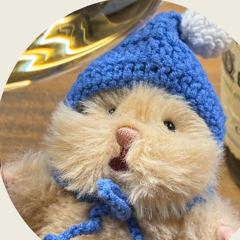
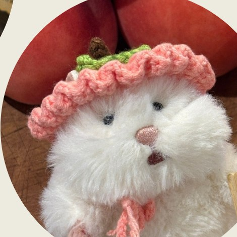
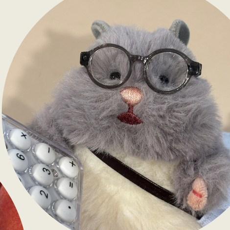
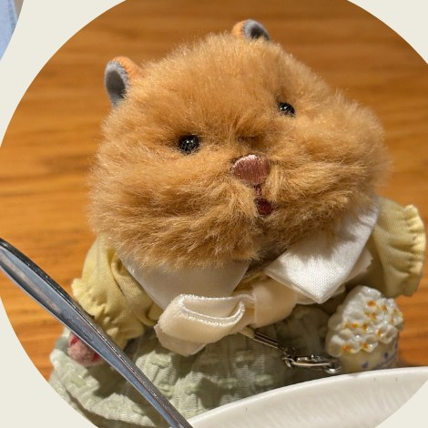
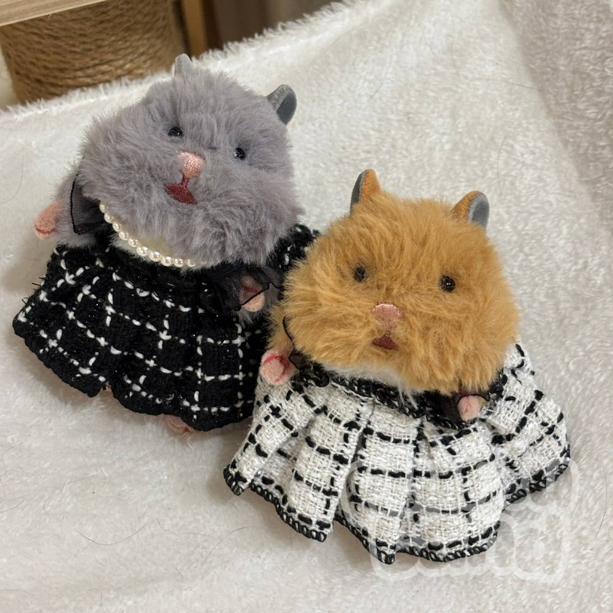

OUR STORY
軟綿綿的
軟綿綿的
小天地
還記得小時候，出門前總要幫娃寶們一個一個點名嗎？PluPlu Land 想守住的，就是那份最初的溫柔，一個療癒與陪伴的世界。

還記得小時候，出門前總要幫娃寶們一個一個點名嗎？PluPlu Land 想守住的，就是那份最初的溫柔，一個療癒與陪伴的世界。
出門前，我們總會認真地幫每一個娃寶點名；不小心掉到地上，會心疼地趕快撿起來呼呼。那是我們最初學會的照顧，也是最純粹的愛。
長大後的社會壓力，讓我們把溫柔都留給了工作與別人，漸漸忘了留一點給自己。直到某天，看見妹妹下班後依然細心地替她的狐獴小娃寶穿上小衣服、跟他碎碎念分享日常，才驚覺，那份純真從來沒有消失。
後來，遇見了はむにぎり倉鼠娃寶。圓滾滾的、有點呆又有點傲嬌，卻總是買不到合身的小衣服。於是我們開始四處尋找、認真挑選，也和合作的織女一起訂製，替這些小朋友張羅屬於他們的日常。PluPlu Land，就這樣開始了。
這個品牌的誕生，是為了在疲憊的世界裡，留下一個可以慢慢喘口氣的角落。PluPlu Land，軟綿綿的小天地。希望你也能在這裡，重新牽起小時候的自己，找回最初的溫柔與療癒。
也許你是工作壓力好大的上班族，也許你只是著迷於世界裡的小小美好。不管是哪一種你，都值得有一個「可以被照顧、也悄悄照顧你」的小存在。
替娃寶換上新衣、佈置一個小角落、拍下今天的合照。這些小小的儀式，會輕輕接住疲憊的你。娃寶想陪你，把日子過得慢一點、軟一點。

「在我們眼裡，每一個娃寶都不是物品，PluPlu Land 創辦人
而是值得被取名字、被好好稱呼的小朋友。」
四隻はむにぎり娃寶組成的小小團隊，每天在店裡張羅大小事，等你來玩。

溫柔的效率控，也是大家最信任的肩膀。圍裙口袋像百寶袋，永遠能掏出剛剛好的工具，默默替大家把每一件事都打點妥當。

偶爾出點小差錯，但因為實在太可愛，反而成了店裡的招財貓。對美感有天生的直覺，店裡最好看的陳列，常常出自他手。

年紀最小，卻自帶長輩般的穩重氣場。眼鏡其實沒有度數，只是為了看起來專業。喜歡喝熱茶，最近迷上自學程式。
✦ 這個網站就是他做的喔！
像風一樣的孩子，是 PluPlu Land 與外面世界之間的橋樑。喜歡在路邊亂逛尋找靈感，常常帶回一些「奇怪但莫名受歡迎」的神祕小物。
我們堅持每一件衣服、每一個配件，都由娃寶親自實穿拍攝，絕不使用 AI 生成照片。因為我們想把最真實、最沒有誤差的穿搭質感，呈現給每一位陪伴娃寶的主人。這是 PluPlu Land 最珍貴、也最不妥協的堅持。

每一件選物在出門找你之前，都會先經過我們的手。
鈕釦、縫線、配件小零件逐一檢查過才放行，先替你和寶寶把關一次。
把多餘的線頭一一修剪乾淨，讓每件衣裳整整齊齊地出門見你。
針織綁帶手工多打一個結收尾，避免使用時開花、散掉。是小事，但我們很在意。